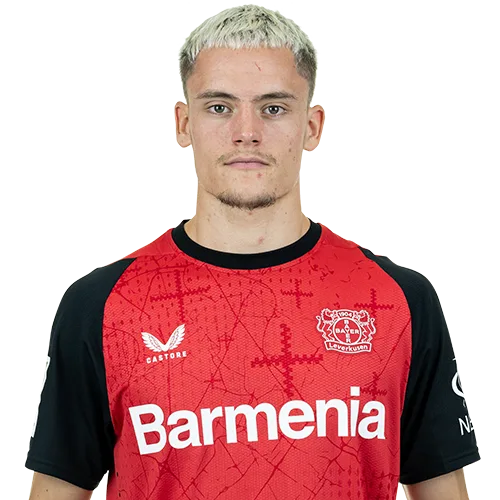

Formula 1
I follow Formula 1. Speed, teamwork, and careful strategy in the sport interest me, and they remind me that small details matter — the same idea I try to use when I write code.
My name is Moses. I am a student at Lenana School, where I am learning IT and how to build websites with HTML and CSS.
I used to play football as a midfielder. An injury stopped that part of my life, but I still care about sport, games, and competing in a smart way — whether that is on a pitch, in a Scrabble match, or watching Formula 1.
I want to create websites and sell them, and later I may build an app, start my own company, or work as a software developer.
I follow Formula 1. Speed, teamwork, and careful strategy in the sport interest me, and they remind me that small details matter — the same idea I try to use when I write code.

I was a midfielder and enjoyed reading the game, passing, and working with a team. Injury ended that chapter, but the habit of practising and staying focused still helps me in school and in IT.
Gaming is one of the things I am good at. It is how I relax, solve problems, and stay curious about how digital products feel to use.

I enjoy Scrabble because it rewards vocabulary and planning. I also take school work seriously at Lenana School, especially the IT skills I am using to grow as a developer.
Right now I want to design websites people can actually use, and sell that work. In the future I could create an app, start a company, or join a team as a software developer.